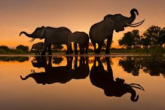

A wildlife photographer is a person who takes pictures of wild animals, plants, and other creatures in their natural habitats. Their goal is to capture the beauty of wildlife and their behavior in their environment, which can include both static poses and action shots. Wildlife photography can take place in many different environments, such as rainforests, deserts, grasslands, and underwater.
Wildlife photography is a genre of photography concerned with documenting various forms of wildlife in their natural habitat.As well as requiring photography skills, wildlife photographers may need field craft skills. For example, some animals and birds are difficult to approach and thus a knowledge of the animal's and birds behavior is needed in order to be able to predict its actions. Photographing some species may require stalking skills or the use of a hide/blind for concealment. While wildlife photographs can be taken using basic equipment, successful photography of some types of wildlife requires specialist equipment, such as macro lenses for insects, long focal length lenses for birds and underwater cameras for marine life.
